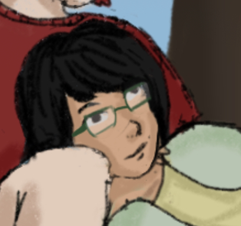
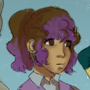

Mari

Age: 17
Gender: girl
Instrument: violin
Major: Homeschooled in highschool
Background: Childhood best friends with Quinn very competitive and energetic around people she knows otherwise very
withdrawn. She is nonspeaking/nonverbal and hates when people don't let her/give her time to communicate and loves color, cutsey things especially astronomy and flowers which she
spends hours looking at videos and reading about. she joined the band through Quin since they tend to stick around
each other
Kian

Age:18
Gender: trans man
Instrument:Bass
Major: Film Making
Background: Very outgoing originally got the band together for a film project but quickly befriended all of them
wanting to turn it into a real band. Loves films and music and people.
Quinn

Age: 18
Gender: Nonbinary
Instrument: Piano/ Percussion
Major: Animation
Background: Very quiet and keeps to themself they like animating and lives with their grandma who crochets them
things which they where a lot. Is a very good listener and usually lets Mari yap to them a lot especially when their
sick and have nothing better to do. They are dating Arlo and is very affectionate with him. They really care for
their friends and is an empathetic person often trying to fix other peoples problems in order to not be percieved as
a burden
Willow

Age: 18
Gender: Woman
Major: Physics
Instrument: Singer
Background: an overachiever and was a straight A student in high school who took care of their siblings and working an job and expects only the best from herself resulting in her isolating herself. Due to this being unrealistic expectations for herself she hasn’t been fairing well. She’s very serious and responsible keeping the others safe constantly
Arlo

Age:18
Gender: Man
Major: undecided
Instrument: Guitar/Percussion
Background: He is your average rowdy teenager who just got into college. He wants to party drink and have fun. He has no sense of responsibility until he starts a relationship with Quinn who made him start thinking about the consequences of his actions.